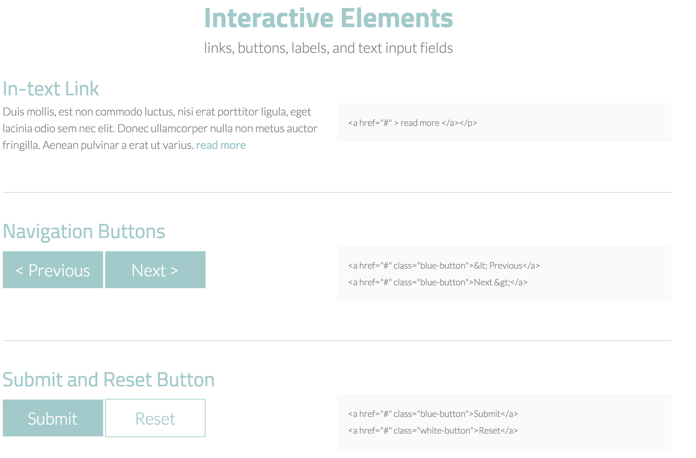
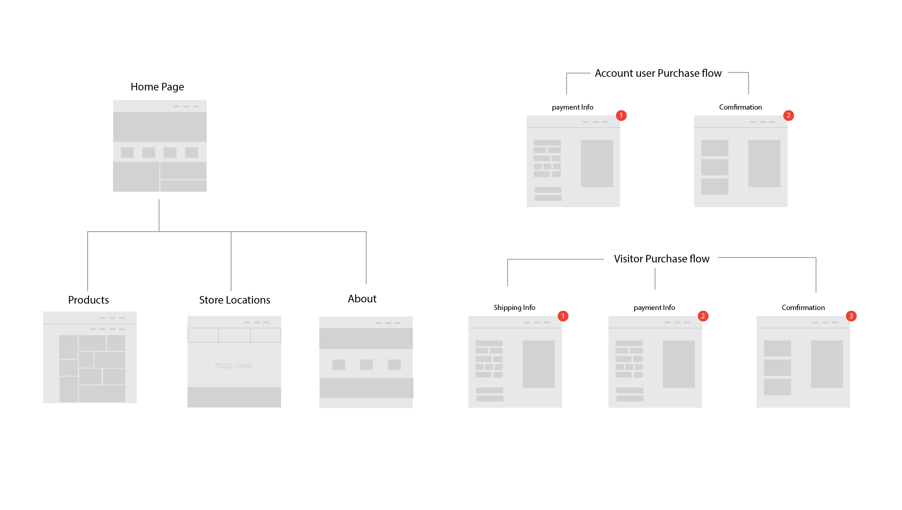
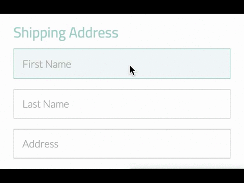
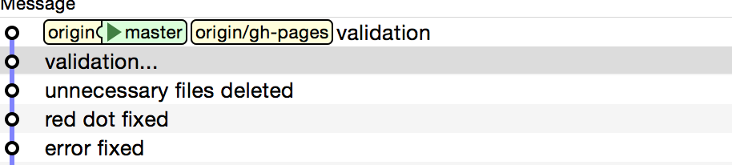

Design Cycle
Branding & Style Guide
We started with defining the brand and style guidestyle guide by finding out the colour pattern to match Juu's material. Then the webpage is further build up by adding basic elements.
Site Map
We use the site map / wireframes to organize web site's content, list out all the functions and provided different purchasing flows for account users and new visitors.
HTML & CSS

Implement all the previous design into the HTML & CSS, we did a lot of work to make it responsive and cross browser. For learning purpose we did not use any framework or guide system.
jQuery
We worked with jQuery and Masonry.js to make the web more responsive and much smoother interaction. The demo above shows the label for each input appears inside the box to reminder user which section they are typing in.
Git
We worked on the github to manage our process and workflow, for more about this project you can view on github.